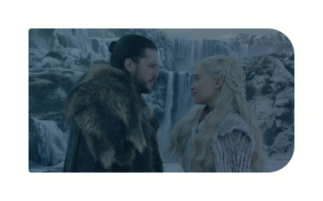
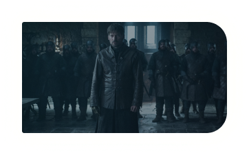

Episodes
A lot of interesting and unusual things happened
on the saet and outside, during the shooting
of the Game of Thrones eight seasons.

The Dawn Age is an epoch in the history of the Known World. It was the first historican epoch, ending roughly 8,000 years ago and extending backwards into the mists of time.
S08E01

The Dawn Age is an epoch in the history of the Known World. It was the first historican epoch, ending roughly 8,000 years ago and extending backwards into the mists of time.
S08E02

The Dawn Age is an epoch in the history of the Known World. It was the first historican epoch, ending roughly 8,000 years ago and extending backwards into the mists of time.
S08E03